|
 |
教你炒股票15：没有趋势，没有背驰
(2006-12-08 11:55:57)
有人很关心诸如庄家、主力之类的事情，但散户、庄家的位次分野这类事情不过是市场之“不患”下的“患”，对本ID所解《论语》熟悉的，对此都很容易理解。有些东西是超越散户、庄家的位次分野的，这是市场之根，把握了，所谓散户、庄家的位次分野就成了笑话。如果真喜欢听有关庄家的逸事、秘闻，以后有空本ID可以说点，而且还可以告诉你如何阻击、搞死庄家，这一点，环视国内，没有比本ID更有经验的了。
对于市场走势，有一个是“不患”的，就是走势的三种分类：上涨、下跌、盘整。所有走势都可以分解成这三种情况。这是一个最简单的道理，而这才是市场分析唯一值得依靠的基础。很多人往往忽视最简单的东西，去搞那些虚头八脑的玩意。而无论你是主力、散户、庄家，都逃不过这三种分类所交织成的走势。
那么，何谓上涨、下跌、盘整？下面给出一个定义。首先必须明确的是，所有上涨、下跌、盘整都建立在一定的周期图表上，例如在日线上的盘整，在30分钟线上可能就是上涨或下跌，因此，一定的图表是判断的基础，而图表的选择，与上面所说交易系统的选择是一致的，相关于你的资金、性格、操作风格等。
上涨：最近一个高点比前一高点高，且最近一个低点比前一低点高。
下跌：最近一个高点比前一高点低，且最近一个低点比前一低点低。
盘整：最近一个高点比前一高点高，且最近一个低点比前一低点低；或者最近一个高点比前一高点低，且最近一个低点比前一低点高。
操作的关键不是定义，而是如何充分理解定义而使得操作有一个坚固的基础。其中的困难在于如何去把握高点和低点，因为高点、低点是有其级别的，在30分钟图上看到的高点，可能在周线图上什么都没看到。为此，必须要均线系统来过滤，也就是前面常说的“吻”的概念，只有在“吻”前后出现的高、低点才有意义。
（注：下图盘整的定义低点有个小错误，实在找不到好的例图了，凑合看吧。后期趋势和盘整的定义都有改变，后期为准。）
这里，首先要搞清楚“吻”是怎样产生的。如果一个走势，连短线均线都不能突破，那期间出现的高、低点，肯定只是低级别图表上的，在本级别图表上没有意义。当走势突破短期均线却不能突破长期均线，就会形成“飞吻”；当走势突破长期均线马上形成陷阱，就会形成“唇吻”；当走势突破长期均线出现一定的反复，就会形成“湿吻”。由此可见，“吻“的分类是基于对原趋势的反抗程度，“飞吻”是基本没有任何反抗力，“唇吻”的力度也一般，而“湿吻”，就意味着力度有了足够的强度，而一切的转折，基本都是从“湿吻”开始的。
转折，一般只有两种：一、“湿吻”后继续原趋势形成陷阱后回头制造出转折；二、出现盘整，以时间换空间地形成转折。
第二种情况暂且不说，第一种情况，最大的标志就是所谓的“背驰”了。必须注意：没有趋势，没有背驰。在盘整中是无所谓“背驰”的，这点是必须特别明确的。还有一点是必须注意的，这里的所有判断都只关系到两条均线与走势，和任何技术指标都无关。
如何判断“背驰”？首先定义一个概念，称为缠中说禅趋势力度：前一“吻”的结束与后一“吻”开始由短线均线与长期均线相交所形成的面积。在前后两个同向趋势中,当缠中说禅趋势力度比上一次缠中说禅趋势力度要弱，就形成“背驰”。
按这个定义，是最稳妥的办法，但唯一的缺点是必须等再次接吻后才能判断，这时候，走势离真正的转折点会已经有一点距离了。如何解决这个问题：第一种方法，看低一级别的图，从中按该种办法找出相应的转折点。这样和真正的低点基本没有太大的距离。
还有一种方法，技巧比较高，首先再定义一个概念，称为缠中说禅趋势平均力度：当下与前一“吻”的结束时短线均线与长期均线形成的面积除以时间。因为这个概念是即时的，马上就可以判断当下的缠中说禅趋势平均力度与前一次缠中说禅趋势平均力度的强弱对比，一旦这次比上次弱，就可以判断“背驰”即将形成，然后再根据短线均线与长期均线的距离，一旦延伸长度缩短，就意味着真正的低部马上形成。按这种方法，真正的转折点基本就可以完全同时地抓住。但有一个缺陷，就是风险稍微大点，且需要的技巧要高点，对市场的感觉要好点。
纯粹的两条均线的K线图，就足以应付最复杂的市场走势了。当然，如果没有这样的看图能力，可以参照一下技术指标，例如MACD等，关于各技术指标的应用，以后会陆续说到。
(娇注：这里说的上涨和下跌趋势是以吻前后的高低点来定义，和中枢后定义的上涨下跌不同.这里说的趋势，有可能就是后面中枢定义后的盘整）
每日解盘（2006-12-11 13:44:29 ）
缠中说禅：
2006-12-11 15:25:14 [匿名] 摄影之友
2006-12-11 15:16:08
博主:你不说盘,让我更郁闷....主席不也说过:不管风吹浪打.胜似闲庭信步嘛!~~~不过.我尊重你的决定.再次多谢你..来这里.已经成了我的一个习惯
=============
大盘已经说的够清楚的，中长线走势早说了，1日说了中短线，12月要出现大幅震荡。这种大幅震荡正是短线的好机会。而大盘的旗帜也很明确，就是银行股、地产股为代表的成分股，只要他们不倒，牛市的第一轮就不会结束。所以没必要每天都说一次大盘，自己也要慢慢学会看。
----------------------------------------------------------------------------------------------
回复：
------
[匿名] 小溪 2006-12-08 12:32:05
缠JJ我的股票600196没出现吻已经跌去一大截了等吻出来那不是都跌没了55555555我咋办呢?
===========
你的理解错误.你好好品味这句话: 首先必须明确的是，所有上涨、下跌、盘整都建立在一定的周期图表上，例如在日线上的盘整，在30分钟线上可能就是上涨或下跌，
(2006-12-08 12:35:56)
------
[匿名] 中间体 2006-12-08 12:31:36
就是说形成趋势后再谈背驰, 背驰的力度是根据面积判断. 但是不是有可能出现背驰后还会有第二个背驰呢??? 请缠姐回答.
============
上面说600196的那位,必须也要如此理解:形成趋势后再谈背驰.对于一段趋势来说背驰只会一次.里面还有一个微妙的东西,过两天说.
(2006-12-08 12:39:24)
------
任我行 2006-12-08 12:37:19
楼主真是一大伟人。无私的把自己的技术向社会奉献了
我喜欢短线。楼主能不能多说点短线操作方法。还有要怎样才能知一个股票有没有主力。就好象这几天走强的600050来事把要怎样发现他要拉升
============
长线短线的技术基础是一样的,只是看的图表不同,最短线的就看1分钟图,一般看5分钟或30分钟图.
(2006-12-08 12:40:34)
------
[匿名] 中间体2006-12-08 12:40:02
一定是二个相邻的面积比较吗???
===========
是,要多看图,面积这东西,目测就可以知道,不用什么指标.
(2006-12-08 12:41:16)
------
[匿名] 外科医生 2006-12-08 12:38:27
如向北辰股份那种走势,如何判断其卖出信号,现在如何处理为最佳方案(首先强调,我并没有该股,只是以此举例而已)?谢谢?
。。。。。。。。。。
昨天下午2点发生背迟，卖出信号
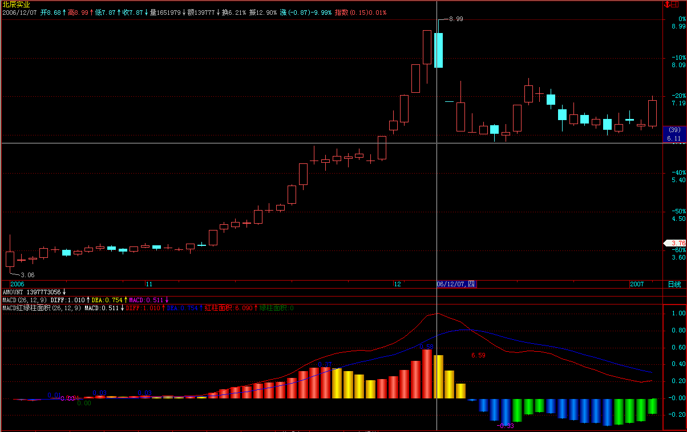
===========
对,该股30分钟图上的辈驰什么明显.对这种短线走势特别猛的,如果资金不太大的,不能看日线,那反应太慢,看30分钟线足以.
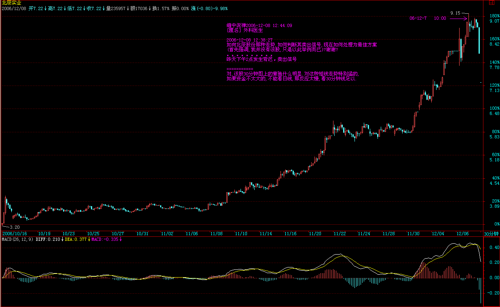
(2006-12-08 12:44:09)
------
[匿名] 半部论语治天下2006-12-08 12:43:45
有个问题，均线交叉形成的面积是不规则的，如何计算？
=============
形成趋势的才算面积,否则不断缠绕的,是盘整.这必须搞清楚.
(2006-12-08 12:45:05)
------
[匿名] nn2006-12-08 12:29:25
首先感谢楼主无私教诲,但理论性较强,年龄老了,还需要漫漫领会,有一点不明,比如向北辰股份那种走势,如何判断其卖出信号,现在如何处理为最佳方案(首先强调,我并没有该股,只是以此举例而已)?谢谢?
=============
这种短线太猛的,看30分钟图,卖点十分清楚.目前如果没走也不用怕,反抽会很猛烈的,就等着吧.
(2006-12-08 12:47:17)
------
心禅2006-12-08 12:47:20
“禅主”，你好，我来了，稍晚点，卖点的疑惑：从个股看，第一卖点并未出现，可大盘的调整下跌必使其下跌，此种情况如何回避？是不考虑大盘的下跌继续持有吗？
============
这种情况根本不会出现,关键是图表选择的问题,像北辰实业这次,在日线上没有第一类卖点,在30分钟线上就十分明显,关键是你如何选择.
(2006-12-08 12:52:04)
------
公告一条缠中说缠定理,任何的上涨转折都是由某级别的第一类卖点构成的;任何的下跌转折都是由某级别的第一类买点构成的.
(注：注意这里趋势的定义和1买的定义，和后期的不同）
注意版权.
(2006-12-08 12:56:14)
------
[匿名] 中间体2006-12-08 12:56:34
缠姐没给出结论啊, 面积比越大越好还是越小越好啊, 应该是小吧.
==========
上面写的很清楚,比前面的小就可以了.好好研究这句话,如何判断“背驰”？首先定义一个概念，称为缠中说禅趋势力度：前一“吻”的结束与后一“吻”开始由短线均线与长期均线相交所形成的面积。当缠中说禅趋势力度比上一次缠中说禅趋势力度要弱，形成“背驰”。
(2006-12-08 12:58:41)
------
小明2006-12-08 14:55:02
[匿名] 庸人2006-12-08 14:32:52
世上本无事，庸人自扰之。一个小小的北辰实业，就能够让大盘尸横遍野。所有的繁荣只不过是虚幻，过眼烟云而已。
=======================
自称庸人的人水平的确不怎么样！缠mm曾经说过，不要跟着那些小资金后面玩，要多看看大资金在干什么。你看看几大龙头股哪个不是筑成了双重顶？
而北辰只是个导火索而已，just一个引线，懂吗？
============
干什么都要有预见性,这调整,1日已经提前提醒了,不相应操作是心态问题,被市场迷惑了.繁荣只不过是虚幻,不繁荣也只不过是虚幻,不明白这点,总是一边去想,是不可能成为好的操作者的.
好的操作者就是以幻制幻,幻中取利. 大盘跌,意味着机会又来了，应该高兴才对.当然,满仓的就没办法了.
(2006-12-08 15:04:56)
------
[匿名] 中间体2006-12-08 12:40:02
一定是二个相邻的面积比较吗???
===========
是,要多看图,面积这东西,目测就可以知道,不用什么指标.中间有盘整区的话, 是否可跳过盘整区与前面比较???
==============
盘整不是趋势,当然不算.
(2006-12-08 15:06:26)
------
[匿名] 袖手旁观2006-12-10 12:25:57
哈哈，这个解读有意思。如果说上篇比较容易想到，也曾这么想过的话，这一篇实在是相当的有启发。
扯开一句，缠mm在《货币战争和人民币战略（上）》中“美国经济将在今后一两年的平台整理后进入真正的、更具杀伤力的下跌，而这下跌只是更大级别下跌的前奏。”是3年前的话，现在是否有更新？当然长期战略观点是不需要频繁更新的。
=================
这个下跌早用资源类的上涨与货币的贬值化解了.关键的周期在2019年,这是最重要的.那更大级别下跌值的就是这个.
但这种化解只会导致更大的问题.另外,这里说一句狠话:美国股市短期之所以能用这种化解的方式,中国的功劳大大的.本ID当时立论的前提就是人民币不能动,这是一个关键的前提,95年7月这个前提已经没有了,因此而引发的资源类大涨的化解就在情理之中了.
但2019年的大周期是无可化解的,关键的问题是中国不要上那贼船.
(2006-12-10 12:31:51)
------
2005年7月,本ID帖子的题目就是"中国货币战争中的“七七”事变！ "
但对于美国,至少因此短线可以松口气了.其后资源类的大涨是新一轮掠夺的开始,现在全世界股市的上涨也是同一回事情,因为中国这大肥肉进来了,又有新的东西好吃上几年了,国企的大面积被收购在这大背景下都是小事情了.
但这是改变不了2019年的经济大周期的.谁和美国这贼船系得更紧,没有自己独立的战略,最后唯一的作用就是什么,不言而喻.
(2006-12-10 12:40:20)
------
[匿名] 你的样子
2006-12-10 12:51:58
再读一遍货币战争和人民币战略
==========
那个策略现在已经没用了,因为2005年7月人民币已经放开,那是一个最干脆的策略,但需要大魄力.
其实这个逻辑关系本ID已经说过,2005年7月对于全世界经济都是一个关键的转折点，如果当时中国能顶住,一切都不是现在这个样子.当然,现在对于个人来说没什么不好的,这一年半来投资的机会多多,本ID没什么意见.
但对于国家来说,如果只想当老二\老三,也没什么不好的,至少有短期的繁荣.
但如果要当老大,那最好的时机已经失去,只能等待下一次机会了.用本ID的股票术语,第一类买点过了.等第二类买点吧.
而本ID货币战争和人民币战略的前提是:中国要成为老大.如果大家都觉得成为老大没意思,那些文章都是没意义的.
但本ID还是要觉得,中国就是要成为老大,爱咋咋地.
(2006-12-10 12:59:50)
------
[匿名] nn2006-12-10 12:54:06
缠中说禅
2006-12-10 12:40:20
2005年7月,本ID帖子的题目就是"中国货币战争中的“七七”事变！ "
但对于美国,至少因此短线可以松口气了.其后资源类的大涨是新一轮掠夺的开始,现在全世界股市的上涨也是同一回事情,因为中国这大肥肉进来了,又有新的东西好吃上几年了,国企的大面积被收购在这大背景下都是小事情了.
但这是改变不了2019年的经济大周期的.谁和美国这贼船系得更紧,没有自己独立的战略,最后唯一的作用就是什么,不言而喻.
＝＝＝＝＝＝＝＝＝＝＝＝＝＝＝＝＝＝
特别欣赏这句＂其后资源类的大涨是新一轮掠夺的开始＂顺便请教一下：楼主如何看待ＬＭＥ市场此次电解铜的调整？最低会去到哪里或还是不去预测而等待市场出现转机？谢啦！
==============
年尾,就算是最凶横的多头也要歇一歇了.但资源类的上涨是化解美国经济困局的最直接方法,也是世界新格局新分配的一个大游戏,和19世纪\20世纪的殖民浪潮是同一回事情,这个游戏没完,一切都不可能结束.
(2006-12-10 13:03:13)
------
[匿名] nn2006-12-10 13:04:51
本ID当时立论的前提就是人民币不能动,这是一个关键的前提,95年7月这个前提已经没有了,因此而引发的资源类大涨的化解就在情理之中了.
===============================
上面是95年7月还是05年7月?
=========
笔误,当然是05年7月
(2006-12-10 13:11:56)
------
[匿名] 暗夜行路2006-12-10 13:10:31
原来这句话能这么解读啊。古代没有标点符号还真是害人
=========
古人根本不存在这个困难,好象"由"不是指子路,这样的问题,古代人根本不会搞错.之所以后人经常出问题,就是把一些后来才有的用法套在古人身上.本ID的解释和什么标点不标点无关,本ID的前提就是:首先语法上不能有问题,像"由"当"子路"这种问题绝对不能发生.
(2006-12-10 13:14:37)
------
[匿名] 古代2006-12-10 13:11:07
是不是与美国自由经济有关.当货币大于商品是不是造成所谓“通涨”只有通过调控货币才能有益市场发展。资源类的大涨短期是否是一种假象意在以后通过经济掠夺.好像美国“基金”掠夺惯用手法
===============
对于美国,“通涨”是全世界的人去为他分担的,美国是最不怕“通涨”的国家.换句话说,“通涨”这武器一旦起用,受伤最小的肯定是美国,美国已经用这样的武器把日本等打败过了,人民币的放开,最大的问题使得美国这杀手用能发挥充分的效用.
(2006-12-10 13:18:53)
------
[匿名] 淡定2006-12-10 13:15:42
个人认为，05年7月错过第一个买点不是我们的主动选择，而以后这一年多来的所有变化只不过是我们的一种顺势而为的举动。当然每个炎皇子孙都愿意自己的国家成为老大，但这也要天时、地利、人和，愿我们的ZF发挥中国人的大智慧，卧薪尝胆最终得以笑傲世界！
=========
我们本可以主动选择,这就是为什么本ID要写"中国货币战争中的“七七”事变！ "
(2006-12-10 13:20:29)
------
公告
明天本ID将推出《货币战争和人民币战略》的续篇,对2005年以来的经济大环境以及中国可能的对策进行分析.
(2006-12-10 13:23:02)
------
=====《货币战争和人民币战略》续一 486e105c010007l2=====
如果有文章要交流的,可以到本ID开的圈子里,现在已经有不少人发了不少文章,各位除了来看本ID的,也可以去看看其他人的,更可以自己发文章互相交流.
方法:点击本ID首页"我的圈子",然后按新浪提示操作就可以.
(2006-12-11 11:53:17)
------
[匿名] 罗布2006-12-11 09:01:00
请问600050短线该走了吧？谢谢
===========
先搞清楚什么是短线，短线该看什么图。如果你的短线是看1分钟图，那你的操作频率就要多，如果你看30分钟图，那频率就少。先确定看什么图，然后在说走不走。
另外，就算你看30分钟玩短线，也可以利用1分钟图来打短差，就是有一部分筹码按1分钟的提示来操作。
至于走不走，就看图上有没有第一类卖点或第二类卖点。
(2006-12-11 12:09:58)
------
[匿名] 清2006-12-11 12:05:39
继续操作，继续问问题，是知也。关于《教你炒股票12：一吻何能消魂？》中“注意，买的时候一般最好在第二个买点”？？？为什么呢？同篇文章中“一般，男上位后的第一次缠绕肯定不是（最后一次缠绕），从第二次开始都有可能”，请问这种分析是在什么时间周期的图上都有效吗？盼回复！
===============
如果你已经对背弛很熟悉，最好当然是第一类买点。第二类买点对不熟悉的人好一点，至少可以避免判断错背弛在下跌中买股票的风险。 本ID所说的对任何周期都有效。但必须注意，“第一次缠绕不是”是针对趋势中寻找背驰来说的，因为如果是趋势，一定会有两次以上的缠绕，而没有趋势没有背驰。 关于如何判断趋势，以后都会说到的。 当然，在盘整中，一次缠绕后就会有买点，但本ID是不赞成在盘整中买股票的，除非这种盘整是周线或月线级别的，这样才可以弄出大的利润来。 这些问题以后都会详细说到，不用急。
(2006-12-11 12:16:08)
------
[匿名] 想飞2006-12-11 12:15:17
LZ,除权的位置该如何分析
============
如果用5、10线，除权日线图以下的操作影响不大，不用复权。如果是周线、月线，可以复权。
(2006-12-11 12:21:32)
------
[匿名] 清
============
对于女上位，除了最后依次缠绕，每次缠绕后买入都会挣钱，但本ID只把第一次缠绕后的定义为第二类买点。ID只建议在图形的底部买，这样风险好控制，这是好习惯。
市场里，好习惯是第一重要的。一个坏习惯可能可以让你一度赢利，但最终都是坟墓。
(2006-12-11 12:28:56)
------
[匿名] 摄影之友2006-12-11 12:29:16
射南哥哥:
股海提款,探囊取物!诗词音律,精美绝伦!金针度人,慈悲为怀!采阳滋阴,灵俗双修!楼主活脱脱是个现实的观世音!___________________
赞!!!!
===========
人人皆佛，不用活脱脱。
(2006-12-11 12:33:02)
------
[匿名] 中银国际2006-12-11 15:02:40
楼主，你在周五说北辰会有强力反抽，我今天跌停买了点，什么时候出呀？
===========
个股问题，本ID是不回答了。但具体方法可以说一下，一般这种类型的反抽，5日线是一个重要的位置，要是短线的，就看1分钟线。
另外，周五好象有人说北辰30分钟接吻时已经跌停，用背驰就要在上涨时看力度有问题了就要走，不是等均线都下穿了才反应，这是一个很简单的道理。
例如该股在30分钟图上，如果你用MACD看背驰，它明显走出三次红柱，一次比一次低，这就是最明显的背驰信号，根本不需要等到跌破再有反应。
(娇：小级别背驰在30分图上的反应看红绿柱子）
如何应用技术指标以及如何选择看多长时间的图，以后会陆续说到。
(2006-12-11 15:16:25)
------
[匿名] 摄影之友
2006-12-11 15:16:08
博主:你不说盘,让我更郁闷....主席不也说过:不管风吹浪打.胜似闲庭信步嘛!~~~不过.我尊重你的决定.再次多谢你..来这里.已经成了我的一个习惯
=============
大盘已经说的够清楚的，中长线走势早说了，1日说了中短线，12月要出现大幅震荡。这种大幅震荡正是短线的好机会。
而大盘的旗帜也很明确，就是银行股、地产股为代表的成分股，只要他们不倒，牛市的第一轮就不会结束。
所以没必要每天都说一次大盘，自己也要慢慢学会看。
(2006-12-11 15:25:14)
------
[匿名] 清2006-12-11 15:23:49
联通下午又涨了5％，没有追高。也没有太后悔，呵呵，因为“本ID”说的，要做十年牛人，好习惯一定要养成。
但还是不明白象这些涨起来的好股票，如果想参于，但又要控制风险，应该要怎样操作？盯15分钟线吗？看来要赚钱还是要先学懂。苦恼呀。盼回复。谢谢！
============
你对本ID话的理解不对，本ID是说，如果你按30分钟图操作，那确实不是买点，而在30分钟图上，卖点也没出现。所以有就持有就完了。
但如果你是按1分钟图来操作的，那就不存在这个问题了。所以关键是你的资金量和操作习惯。
其实，如果资金量不大，对于联通这类股票已经在中线图上买点过了，卖点又没出现的，最好的就是持有，然后按照比中线图低1级别的图，拿部分仓位作短差，这样资金利用率就高了。
例如，如果你是按30分钟图上的第一、二类买点买入，那么相应的就可以用1分钟和5分钟图来弄短差。
(2006-12-11 15:33:33)
------
心禅2006-12-11 15:29:11
“禅主”，周末认真研究了你说的“背弛”，现总结及疑问如下“1、背驰”是面积，是5、10日线“吻”后形成的，即在上涨趋势中面积越来越小，形成“背驰”，卖点出现（女下位）;在下降趋势中面积也越来越小，买点出现（女上位转折），此时量应不太大，
2、疑问：“背驰”最理想是看哪个（1分钟、5分钟或30分钟）？
3、日线上的“背驰”有疑问，“双头形态”是什么意思？靠近“0轴”是什么意思？“0轴”是哪条线？
今天一直关注深市大盘走势，感觉和学到了一些东西，明天继续看好，对否？
==============
你把两个概念混了，面积是本ID给出的定义，0轴是MACD里的，是两回事情。以后这个问题会展开说的，别急。
(2006-12-11 15:35:52)
------
[匿名] 摄影之友2006-12-11 15:06:04
博主:
今天一直看着大盘升.却不敢下手.心里这个郁闷啊!!! 眼看着600177(雅弋尔)越走越高..不过.我觉得今天大盘是因前两天的震荡进行一次自然的反弹.明天应该还是进行震荡.所以.我还是有机会的.
博主.对吗
===============
你的思路还是错的。如果弄短线，特别这种变动幅度大的，而自己资金又不大，可以看1分钟或5分钟图。买是要在跌的时候发现第一类买点。你看177，是不是在5分钟图上有一个很明显的第一类买点在6.3元附近？
当然，站在本ID的立场上，是不建议全仓位地按1分钟或5分钟进出的，这对大资金根本无效。但可以利用这些图弄短差。
这些问题在以后的仓位控制上都会说到的。
(2006-12-11 15:44:11)
------
小明2006-12-11 15:43:23
缠mm，你这么无私的教我们真不要怎么感谢你
===========
有时间就多说两句，没时间就不说了。
本ID要走了，现在还要赶去建国门那边有事情要谈。再见。
(2006-12-11 15:45:21)
------
=====本ID如此精确地知道消息，依然要抗议！ 486e105c010007lg=====
------
[匿名] aQ2006-12-12 11:34:40
昨天开始在茅台JCP上布局，今早又进了一批。领会到了什么叫一吻销魂！多谢缠姐点化，到今天完成了从雏男到面首的转化。
另外，请教缠姐，上周末美元兑欧元走强背后的原因是什么？短期对今后的影响是什么？
最后拍一个马屁：缠姐解的论语才是真正的堂堂大道，如果什么时候缠姐要开宗立派，我愿立投门下。
===============
学了就要用，买了就要看好卖点的出现，特别权证，如果你资金量不大，看1分钟，最多看5分钟图足以。
货币走势的短线原因没必须去探讨，知道大趋势就可以。
本ID没有兴趣开什么派，人人皆佛，不要自我憋屈。
(2006-12-12 11:52:05)
------
这事没完，还有一个就是这个
还有中国一个最大的药厂之一正被国外最大药厂之一收购,方案在报批中
玩一个游戏
有兴趣的可以猜是谁，明天公布答案。
(2006-12-12 11:57:06)
------
[匿名] 悠悠悠哉2006-12-12 12:05:08
大姐不要告诉些涨的都快差不多啊,哈哈 不如告诉点小道消息啊！
========
本ID不讲消息，只将技术，按技术，自己找第一类买点去。
(2006-12-12 12:06:44)
------
[匿名] 炼铁设备2006-12-12 11:55:18
楼主：术语背驰＝背离？600036.其走势象你所说:发生了背驰,工商银行.也发生了背驰
============
工商银行哪里有？请研究 清楚。
(2006-12-12 12:08:14)
------
[匿名] 中间体
2006-12-12 12:19:54
背驰是很关键的技术, 请缠姐讲透.
上涨过程趋势中, 红柱没创新高,下跌过程趋势中,绿柱要没创新底, 是不是有两种比法,
1) 与前面高点(底点)相比,
2) 与自身同一片红柱(绿柱)相比.
谢谢缠揭答复.
============
MACD是辅助的办法，最简单的还是看均线的上涨力度。对于MACD，肯定是片和片比，但当下那一片，红柱子或绿柱子不能继续伸长，开始缩短时，就是严重关注了。不必须等到红柱子变成绿柱子，或反之，否则反应太慢了。
但这个问题要完全解决，还要配合很多东西，以后都会说到的。
(2006-12-12 12:28:10)
------
陈老邪学禅2006-12-12 12:23:41
禅师给你留了言。如果正确，下午我就杀进
========
不要听消息买卖，这是一个很坏的习惯。
(2006-12-12 12:30:21)
------
[匿名] 帅猪如花2006-12-12 14:49:08
大盘是不是背驰？？？？？？？？？？？
===========
大盘要看深圳的，上海的不准。如果看MACD，深圳上次并不背驰，这次是否，就看今后几天红柱子能否继续伸长了。
(2006-12-12 15:16:15)
------
小明2006-12-12 15:01:51
600183的日K线，在不除权图上看，还在年线之下；但是用标准除权的图上看却早在年线之上。请问缠mm，依哪个图为准？还有就是为什么两者差这么多？玄妙何在？
上次你说过上证指数已出现2个缺口，如果再出现一个缺口即为衰竭缺口，但是到现在没出现，而深综指在5666-5692的缺口是不是可以当作上海的衰竭缺口？是不是表明大盘已经进入调整震荡期，结束单边上升走势？
===========
不复权。缺口只是一个参考。
(2006-12-12 15:19:29)
------
[匿名] 雨中荷 2006-12-12 15:20:55
你好楼主！
今日沪深两市均已创出近日新高但是MACD都没有创出新高，请问是不是已经形成背驰？谢谢！！！
============
不是这样看的，今天的红柱子比昨天长，这就可以了，因为这一片正在形成中。哪天红柱子缩短，而前面最后位置超不过，才是危险信号。
(2006-12-12 15:34:24)
------
心禅 2006-12-12 15:33:41
“禅主”，今天一天都在强烈关注你说的深市大盘1分钟图，在学习了你说的MACD红绿柱子，总感觉深市力度不够，上午将600111在10.10卖出空仓，本想买进北辰，可你说的第一买点应该还没出现，等待明天大盘明朗化，真谢谢你！
===========
如果你是超短线，每天进出的，卖了就要马上找到该买的对象，这样资金利用率才高，否则T+1，很难操作。如果你是中线的，在牛市中就不要随便空仓，除非你资金特别少，可以利用震荡不断把成本降低，直到日线或周线的第一类卖点出现后一次性卖出。
(2006-12-12 15:48:59)
------
[匿名] 见习者2006-12-12 15:35:01
我猜是不是三九集团,背驰是不是价升量缩或价降量升的叫背弛,盼答案
==========
量只是参考，关键看趋势的力度。
(2006-12-12 15:54:35)
------
[匿名] 然然2006-12-12 15:59:10
好姐姐 你到是答我一答啊 我把买房的钱都压在000768上了
===========
首先，市场不是赌场，把买房钱用到市场里，就是一个错误的行为。市场中的钱，一定要是闲钱，可以放着不动的，没有提走压力的，只有这样，才会心态平稳地操作。
其次，本ID不清楚你是在什么位置买入的，而且也不清楚你选择怎样的操作风格。如果是底部买入短线的，那早就该走了，至少避开了这么长时间的盘整。对小资金来说，最重要的就是不能参与太长时间的盘整，这样太浪费机会。如果你是追高买入的，那谁都没办法。因为该股是大幅上涨后的中线调整，而该股早就庄股化，所以只能寄托于那庄家少洗点盘了。技术上，三角整理已经接近尾声，但这种图形，如果是本ID坐庄，一定狠狠往下跳水洗一次盘，把所有人都洗出来，再反手往上。你现在唯一希望的就是别碰到和本ID有类似想法的庄家，否则怕你熬不住。中线，该股是有再走一波的潜力的，但关键是你熬得住。
最后，一个忠告，股票是一个快乐的游戏，别把自己搞得那么苦。坚持只选择第一类第二类买点进入，就是保持快乐的好方法。
真正的高手是什么？就是庖丁解牛，选择难度最小的方向去，整天爱玩高难度的，成不了高手。
(2006-12-12 19:29:44)
------
缠中说禅 2006-12-12 20:11:39
[匿名] 雨中荷 2006-12-12 16:03:42
谢谢你楼主，我明白了就是如果股价或指数创新高而MACD的红柱子却低于前一天也就有可能产生背驰对吗?还有如果产生背驰股价下跌5日和10日接吻后，会不会还有一个冲高有一个相对的高点可出，还是就一路下跌了？谢谢你！！！！
======
理解错误。柱子出现今天比昨天短，昨天比前天长的情况，证明柱子的一波出现转折，转折这一天的高度如果比上一波转折高度低，就形成柱子上的背驰。但对于MACD，单纯看柱子上的背驰还不行，还要看黄线DEA和白线DIFF的走势，特别对于通道式，一定要看。这个问题以后说技术指标时再说。
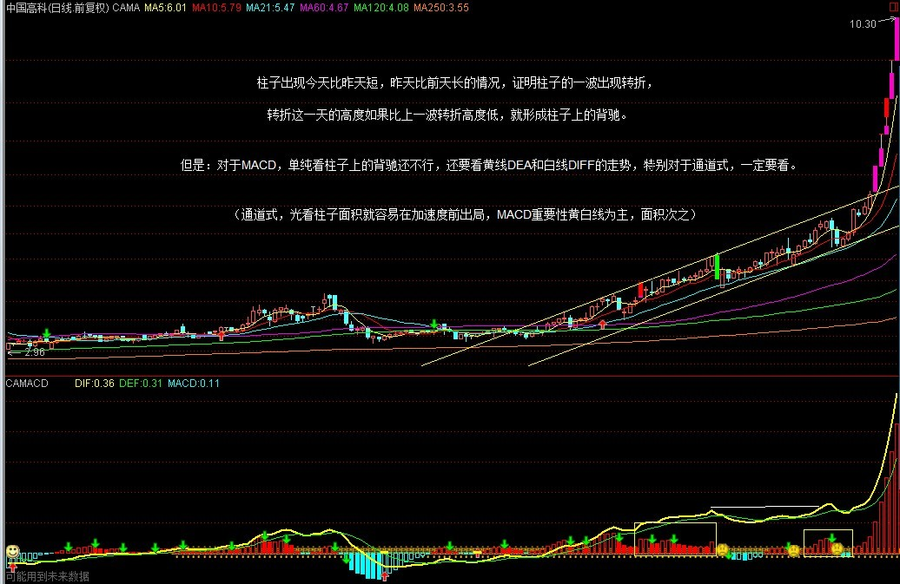
[匿名] 获益匪浅2006-12-12 17:02:44
“任何的上涨转折都是由某级别的第一类卖点构成的;任何的下跌转折都是由某级别的第一类买点构成的.”不知博主能否抽空详述之，甚盼
=============
当然，但要安排在下下一课，因为下一课要说的是一种适合中小资金的高效买卖法。
(2006-12-12 19:31:21)
------
[匿名] 炼铁设备2006-12-12 16:49:26
从５分钟走势图中判断如下： 北辰实业（６０１５８８）明天升 ;上港集团，明天升 ;工商银行，明天有降的可能 ;招商银行，中国银行，明天降 ;请楼主批评！
=======
完全理解反了，这里不是教怎么当算命先生的。预测升降是股评的事情，和本ID无关。
(2006-12-12 19:53:57)
------
[匿名] 舞者 2006-12-12 16:48:09
你好楼主！今日沪深两市均已创出近日新高但是MACD都没有创出新高，请问是不是已经形成背驰？谢谢！！！
============
不是这样看的，今天的红柱子比昨天长，这就可以了，因为这一片正在形成中。哪天红柱子缩短，而前面最后位置超不过，才是危险信号。
－－－－－－－－
“而前面最后位置超不过，才是危险信号。”请问这里所说的“前面最后位置”是上一日的红柱还是上一波最长的红柱？请明示。
==============
这个问题很简单的，背驰如果用MACD红绿柱子来看，当然是看一波的。红绿柱子的一波怎样构成：就是先伸长，在缩短，而最长的位置就是转折点。如果今天还比昨天长，证明转折点还没出来，只有出现今天比昨天短，昨天比前天长的情况，才会出现转折。这个问题一看图就明白了，太常识性的问题了。
(2006-12-12 19:59:07)
------
[匿名] 我已潜水好久2006-12-12 20:30:02
“本ID” 你也真让我头疼，我想这里不是所有的人都是职业做股票的，所以大家也就没什么时间看短线，而你那套理论只把核心的思想说出来了，但是股市千变万化，怎么可能是那么简单的一个核心思想就可预测的，他需要好多指标相互支撑的
============
你的理解也是错的，首先本ID反对任何的预测，其次，任何一套系统的有效性问题在前面也多次探讨，特别在数学原则那一章里，先把本ID说的先搞明白，否则说什么都没意义。
(2006-12-12 20:33:13)
------
[匿名] 一样一样2006-12-12 20:15:03
请教600900是否即将发生背离呢????谢谢!!!!!!!!!!!!!
============
如果是30分钟，背离早发生了，所以才有这么多天的调整。而日线上并不存在。因为，一般最有效的背离是这样发生的：黄白线回到0轴附近再上去，股价新高而两线以及柱子都不新高，这时候出现的背离最有效。
(2006-12-12 20:38:09)
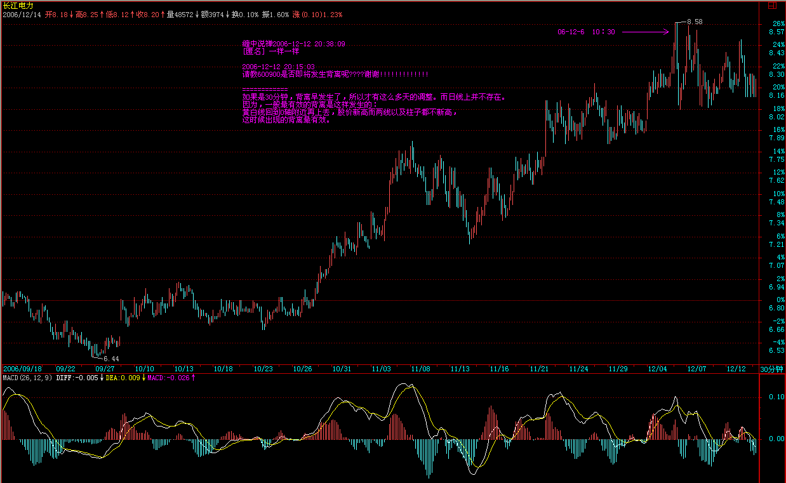
------
[匿名] 路过2006-12-12 20:32:57
缠mm 看你在 问你下 你对易经有研究么？如果有什么程度？
===========
说完论语会说它的，一年以后吧。
(2006-12-12 20:39:37)
------
[匿名] 一样一样2006-12-12 20:33:03
再请教,好的股票真正上涨的时候不正是背离背离再背离吗?
=============
错，真正的背离发生以后，就会出现转折。去研究一下北臣的30分钟图。
关键的问题是，别把不是背离的当成背离了。这里有很多技巧，以后都会说到的。
(2006-12-12 20:43:30)
------
[匿名] 上海三毛2006-12-12 20:43:14
非常感谢楼主，学到不少东西。我觉得和你学我一定能把前些年的损失找回来，谢谢！
=============
本ID不是拐杖，一定要变成你自己的东西才可以。多看图，多研究，多理解，这里没有可以取巧的地方。
(2006-12-12 20:45:00)
------
[匿名] 摄影之友2006-12-12 20:41:23
缠中说禅2006-12-12 15:48
如果你是超短线，每天进出的，卖了就要马上找到该买的对象，这样资金利用率才高，否则T+1，很难操作。如果你是中线的，在牛市中就不要随便空仓，除非你资金特别少，可以利用震荡不断把成本降低，直到日线或周线的第一类卖点出现后一次性卖出。
___________________
博主:
我12.11日用15分钟K线以3.92元的价位买入000932华菱管线.我本想用5分钟来监督卖点.可按照你上面的意思.我需要改用日线来找卖点了吗?
===========
千万别这样认为，本ID那话的前提是你在日线或周线的第一、二类买点买入的，你现在的买点根本不符合这个要求，这么能按此操作了。首先15分钟上其实也没出现标准的第一类买点，这个买入，其实是一个箱型买入的操作，和第一类买点无关。短线就按箱型来操作，箱顶不破就出，回来再买回来。当然，如果你运气好，这次上去就突破箱顶，那就更好了。但操作上不能抱这种心理。
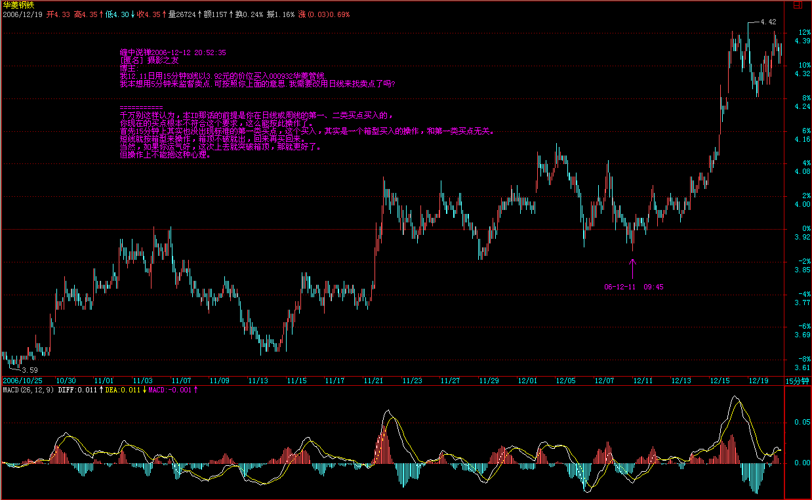
(2006-12-12 20:52:35)
------
[匿名] 学生2006-12-12 20:45:40
“如果跟盘技术不行，有一种方式是最简单的，就是盯着所有放量突破上市首日最高价的新股以及放量突破年线然后缩量回调年线的老股，这都是以后的黑马。”而002087在12月6日那天符合第一种情况，为什么这几天走势如此疲软。请缠MM点评。
“没有趋势，没有背驰”一课中对背驰百思不得其解，能否像喝茅台一样举例分析。谢谢。
===========
你就看好茅台的例子就可以了，找好一个例子慢慢摸索，真明白了，再看其他例子。如果均线看背驰一时把握不好，就先看MACD的，那个好把握。都是方法，关键要精通一种，不要贪多。实际操作时，一种方法精通就足够了，最怕就是什么都懂点，什么都不通。
(2006-12-12 20:55:52)
------
[匿名] 一样一样2006-12-12 20:55:02
谢谢指导,那么背离是短线看30分钟,长线看日线或周线吗?哪个更有效呢?
==============
你的思维还是没转过来。不是规定看什么，而是你根据自己的情况先选好用什么图看。至于进去后，如何利用低级别的图弄短差，那是另外一个问题，是如何提高资金利用率的问题。
(2006-12-12 20:58:01)
------
[匿名] caiyd
谢谢你得分析。难怪我分析最近得半年没发现内容，您说得全是05年得大局，最好得卖点还在06年7.28 看来我只能捂住这个股票，等解套了，
============
没事的，大牛市，最后基本所有股票的涨幅都不会太差的，有时间多学点东西，毕竟市场不是一年两年的事情。
(2006-12-12 21:02:31)
------
wy14992006-12-12 20:46:32
楼主，我昨天在你“《货币战争和人民币战略》续一”留了言，有几个问题，还得请您指点一下，谢谢！
============
有问题转到这里来吧，太多帖子，本ID忙不过来。
(2006-12-12 21:05:13)
------
各位注意
对背驰的判断是实际操作中最大的难点之一，一下子把握是有困难的，所以要耐心。
判断背驰，可以光看均线关系，这对技巧的要求比较高。
也可以看技术指标，例如MACD，这种好把握一点。
MACD关键是处理好红绿柱子的一波，与一波中的高点转折的关系。每个红绿柱的一波都向一个小山，山顶就是转折的地方，这一看图就明白了。
但光会看红绿柱还只是初步。关键要会看上面的两条黄白线。黄白线在0轴（也就是分割红绿柱那条直线）之上就是多头行情，之下就是空头行情。
告诉大家一个缠中说缠的MACD定律：第一类买点都是在0轴之下背驰形成的，第二类买点都是第一次上0轴后回抽确认形成的。卖点的情况就反过来。
关于这个定律以及其他问题，以后会在专门说MACD时更详细地解说，这里可以先看着。
(2006-12-12 21:14:35)
------
心禅2006-12-12 21:10:09
这里是每天都会想着进来看看，惊喜“禅主”在！你好辛苦，中午、晚上都要回答我们的问题，看见你说明天会有一个“关于中小资金高效买卖”文章，好期待！相信“禅主”一定是佛家善人，与我们同在！今天不问技术上的事了，知道你在北京，我是深圳的，真心希望有时间能有幸接待！
============
没有，今天刚好没应酬，北京现在外面天寒地冻的，还不如在这里回答一下问题，至少可以帮助一下大家。那文章是后天出来，上面这么多内容，要有点时间让各位消化，否则一下用说新的，都搞混了，那就麻烦了。
上面那“各位注意”，请好好看看，自己看图好好理解一下。
(2006-12-12 21:19:21)
------
给大家一个图，结合本ID上面的“各位注意”，自己分析一下。这就是038004，五粮液认沽。这东西本ID上市时搞过一次了，最近这次是第二次，就是按照这个标准进入的，各位猜猜本ID是如何进入的，又在什么地方加码买入的。明天告诉各位答案。
该权证风险极大，最终要变成废纸，本ID说它只是为了和各位上课，绝对不要买，而且现在买点都早过了，更不能买。
(2006-12-12 21:29:01)
------
好了，今天就到这了，先下，再见。
(2006-12-12 21:30:16)
------
=====《论语》详解：给所有曲解孔子的人（40） 486e105c010007m1=====
适于中小资金的高效买卖法; 明天上传。 那个医药公司，今天谜底已经揭晓了，所有人都应该知道是谁了，因为它一开盘就涨停。 今天公告里没把事情全说出来。外方是世界最大医药公司之一，他们有一个产品特别适用于男猿人。
(2006-12-13 12:04:19)
------
关于038004的作业，回答比较正确的是下面这位。但还是有点出入。10月23到25日是本ID的见仓期，第一波上去后，11月8日减了一半，后来在60天线附近一路回补，加仓是在12月6日、7日两天，比第一次买的，加了1/2的仓位。这里的理由除了第二类买点，还有一个现在没说到的，就是三角形整理的第五波末段。该走势十分标准，自己去研究一下。昨天根据5分钟线的背弛出了大半，把剩下的成本是0了。本ID作权证，特别是认沽，第一轮上去都会这样减仓操作，只持有成本是0的仓位等待第二波，第二波是否有，这已经问题不大了，这样就绝对立于不败之地了。
[匿名] 在路上
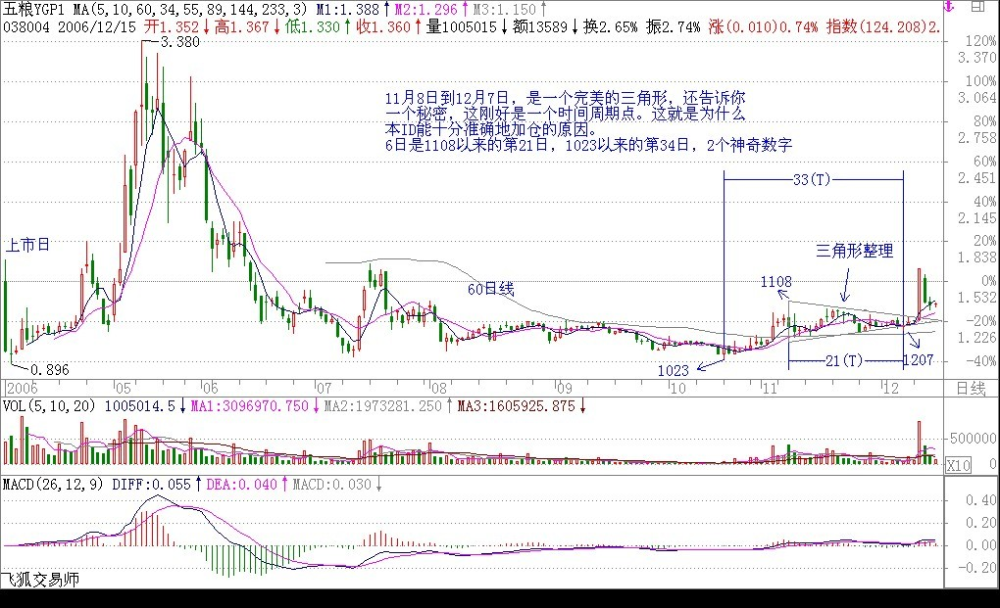
2006-12-12 23:48:54
我先来回答禅姐的038004的问题,以检验最近向禅姐学习的成绩,无论对错,望禅姐和各位同道指正,以求共同步.
日线图:(5/10日均线)
一、038004的强力上升结束后,于06年5月26进入男上位,其后于7.3来了一个很浅的湿吻,按照禅中说禅定律,后面的下跌(7.12)不是第一类买点.7.17来了第二次湿吻,但其后并未出现背驰(中间几次反复缠绕均未突破最高\低价,属于缠姐说的盘整).10.12又来了湿吻,这次湿吻后的下跌至10.31形成的面积小于上次下跌的面积而形成背驰,构成第一类买点,而最佳位置我在30分钟图上看的不太确定,还有就是这次背驰的面积是和5.26至7.3的那次下跌对比还是和9.18至10.12那次对比,虽然这次背驰比那二次都小,这二个问题请禅姐和各位指教.另外可以得到证实的是这次的背驰在MACD中可明显看出绿柱比前二次下跌都短,面积也小很多,黄白线也在0轴以下金叉且并未创最近一次下跌的新低.这确实是一个完美的例子,我相信缠姐会买在10.23那天。
二、找到了第一类买点，第二类买点就容易多了（这也是我最近的体会，如果第一类买点找错，那第二类买点也容易错），是在11.14那天女上位后的第一次缠绕,也许是12.7日那天,因为11.14那天30分钟图同样出现盘整,而12.7比较像背驰但未创新低,对比缠姐曾解说过的MACD的M头后再背驰的说法(虽然我也不太懂).应该是12.7那天是加仓的位置,那也是第一类买点出现后MACD黄白线冲0轴后的第一次回抽并且已经走平了.
望禅姐指正,并希望能回答其中的不明之处,不胜感激!!!
(2006-12-13 12:17:52)
------
本ID的权证不止038004。还有一个的典型例子，又是一个作业。
请用昨天回复里说的缠中说缠的MACD定律好好分析一下580991，为什么本ID能在10月23到25日坚决建仓。
告诉大家一个缠中说缠的MACD定律：第一类买点都是在0轴之下背驰形成的，第二类买点都是第一次上0轴后回抽确认形成的。卖点的情况就反过来。

(2006-12-13 12:21:37)
------
小明2006-12-13 12:06:16
缠mm，是999吧！你还是不改你口风啊，还骂我们是男猿人！
关于038004我分析的对吗？
=========
本ID说的是适合于男猿人，又没有说适合于各位，不要搞糊涂了。038004的答案在上面。另外还有新的作业。
(2006-12-13 12:26:04)
------
各位
以后多看回帖，因为在回帖里，很多文章说不到的事情都会说到，还有些特别的问题。本ID的作业，一定要自己搞清楚，像580991的情况，研究透了，对用MACD判断背驰就有把握了。
(2006-12-13 12:28:46)
------
小明2006-12-13 12:27:43
缠mm，我回答的也不差啊，怎么不提一下俺？
本来以为你的资金量很大的，现在看来估计这只是你的一个小仓位而已。我猜的对吗？
==========
对于本ID的总资金，仓位不大，对于一般人，那就很大了。本ID不坐庄的，所以别以为本ID把他们拉起来了。
(2006-12-13 12:30:16)
------
[匿名] 零零六三 2006-12-13 12:05:22
请问大概什么时候能写完出版？
=========
可能要一年以后了。
(2006-12-13 12:31:18)
------
[匿名] 在路上
10.12又来了湿吻,这次湿吻后的下跌至10.31形成的面积小于上次下跌的面积而形成背驰,构成第一类买点,而最佳位置我在30分钟图上看的不太确定,还有就是这次背驰的面积是和5.26至7.3的那次下跌对比还是和9.18至10.12那次对比,虽然这次背驰比那二次都小,这二个问题请禅姐和各位指教.
=============
但你对MACD的分析，不大对，好好研究一下
缠中说缠的MACD定律：第一类买点都是在0轴之下背驰形成的，第二类买点都是第一次上0轴后回抽确认形成的。卖点的情况就反过来。
提示：不要看太散了，一大段地看。
(2006-12-13 12:35:32)
------
心禅2006-12-13 12:33:33
“禅主”，上文所说的“三角形整理的第五波末段。”在已知的情况下看038004清楚，可是正确的从哪个“吻点开始计算？
=========
三角形的判别不看均线，直接看图形。11月8日到12月7日，是一个完美的三角形，还告诉你一个秘密，这刚好是一个时间周期点。这就是为什么本ID能十分准确地加仓的原因。几个因数都结合在一切了。
(2006-12-13 12:37:50)
------
小明2006-12-13 12:37:05
缠mm，你肯定算大户了，也不要太谦虚哦。呵呵
===========
大户？大户不过是散户的一种。
(2006-12-13 12:40:03)
------
各位自己学好技术吧，别关心本ID是谁了。本ID昨天用百度，竟然“缠中说禅是谁”在下面一栏出现。证明用百度查询这个问题的人不少。 本ID是谁基本没人知道，本ID干过的事情基本没人不知道。 其他就别浪费时间了。
(2006-12-13 12:47:38)
------
[匿名] 中间体 2006-12-13 13:55:06
缠中说禅2006-12-13 12:21:37
本ID的权证不止038004。还有一个的典型例子，又是一个作业。 请用昨天回复里说的缠中说缠的MACD定律好好分析一下580991，为什么本ID能在10月23到25日坚决建仓。
--------------------------------------
根据缠中说禅定律(原来我只知道牛吨定律): 10月23到25日形成地一类买点, 缠姐在11月8号应该出掉1/2(开始转折), 因为在11月21号形成背离, 又出掉1/2.还剩1/4, 有可能在12月7号-11号
又补了点, 因为三角型真理即将完毕.
请打分!!
============
先把题目审清楚，现在已经不能简单说一个第一类买点的就完事了，为什么是第一类买点，一定要搞清楚，如何判断，现在必须要更仔细地回答这个问题。
第一类买点，是下跌趋势中出现背驰产生的，现在的问题就要问，这个背驰是如何判断的，怎么看。这是实际操作中最重要的问题之一了。
(2006-12-13 15:07:41)
------
[匿名] 想飞 2006-12-13 14:53:11
LZ,请看600000浦发的周线图2004/3/12~2004/10/15之间的情况,好象无论面积还是MACD都出现了背驰,请问对吗?
还有,你说过不要介入第一波涨幅过大的股票,怎么判断呢?是不是要用"前复权"来看K线图,因为如果用"不除权"看,两者之间的差距还挺大的.
==============
是一定要在第一类和第二类买点介入。另外，那周线图在那时间怎么会构成背驰？没有趋势就没有背驰，先把这个问题搞清楚了。
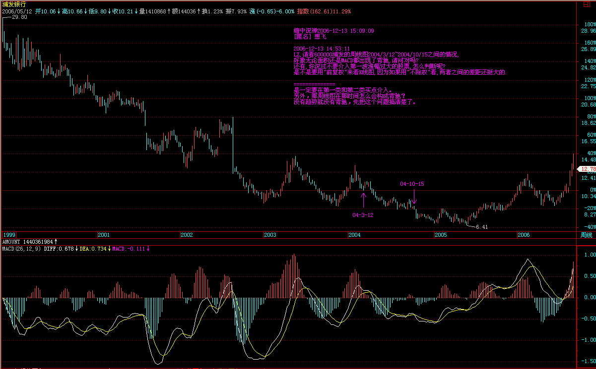
(2006-12-13 15:09:09)
------
[匿名] 想飞2006-12-13 14:31:23
"第二个值得买入或加码的位置，就是女上位后第一次缠绕形成的低位。"
LZ,这个缠绕是否一定得是湿吻,飞吻和唇吻算不算?
============
这个并不需要，在变动快速的图上，不出现湿吻也是很正常的，但其基础往往令人怀疑。好好研究一下038004日线的第二类买点构成，这是一个用三角形构造第二类买点的完美例子。
(2006-12-13 15:12:27)
------
马上有事了，先下，上面给的作业，请好好思考。为什么要用权证的例子，首先这都是实战的例子，其次，权证而且还是认沽的，都能符合要求，就更证明了本ID这套方法的适用范围。一般的股票，走势更规范，就更不用说了。
权证走势都能搞明白，其他就更好办了。
再见。
(2006-12-13 15:19:03)
------
心禅2006-12-13 15:22:31
"禅主“，是不是所有的”缺口“都应该会补上？我今天本想买入000400，可看它8.85跳空高开，就等补”缺口“，可它却涨上去了，为什么不补？盼解答！
=======
临走再回答你的问题，缺口不补，表示强势。特别是突破性的缺口，或岛型反转的缺口，是不补的。上海指数94年在300多点留的那个缺口，10几年都没补过。唯一肯定要补的缺口，就是盘整中的，已经上涨最后的衰竭性缺口。
(2006-12-13 15:28:18)
------
[匿名] 学习中2006-12-13 15:25:57
根据缠中说缠的MACD定律：第一类买点都是在0轴之下背驰形成的，第二类买点都是第一次上0轴后回抽确认形成的。
下午买的600567价位3.24是否是第二类买点.
敬请楼主点评.
===========
首先把基本概念搞清楚，买点必须先确定是在什么图上的，日线还是周线还是什么。没有这个前提，哪里有什么买点。
(2006-12-13 15:40:00)
------
不行，一定要走了，有问题先放在这里，晚上有空再回答。再见。
(2006-12-13 15:41:57)
------
[匿名] yjbtxy2006-12-13 16:01:38
请教禅女：000928现在是否面临三角形整理突破？分钟、日线图很好看，但是周线图不好看。
==============
这不是三角形，而是一个典型的平台式调整。而且恰好相反，他的周线走得还可以，不过下面关键是250周线的支持，该位置不能有效跌破。
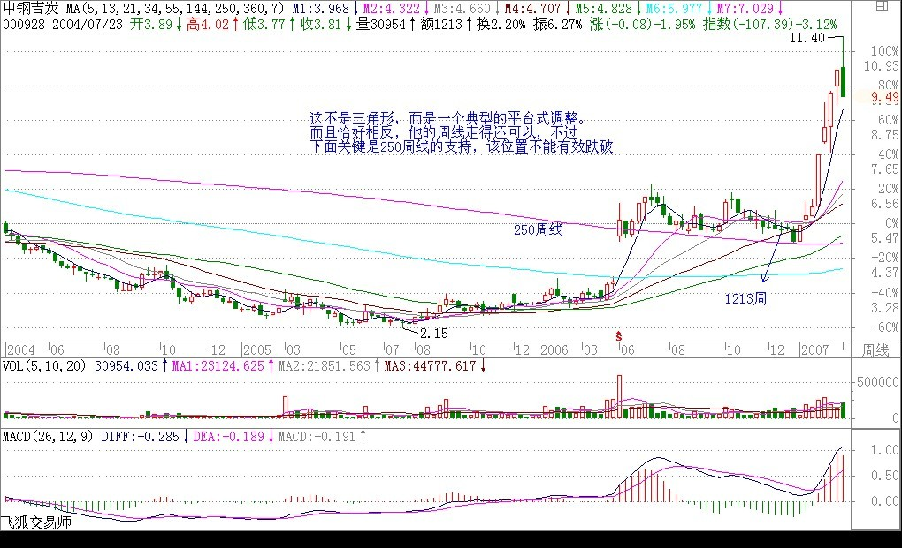
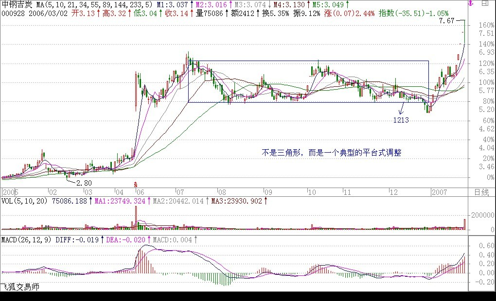
(2006-12-13 21:01:50)
------
[匿名] 中间体2006-12-13 15:52:40
其实我还有的混, 这三个面积,
A: 8月2号到8月16号形成的面积
B: 9月18号到10月12形成的面积
C: 10月19号到10月31形成的面积
因为A与B之间有明显的平台.有平台就没有趋势, 是C与B 相比呢, 还是B与A相比呢.似乎C与B相比更好.
============
你好好理解这句话，没有趋势就没有背驰，背驰是趋势和趋势比，和盘整无关，在好好研究，你会真明白的。不是所有的绿柱子都要去比的，盘整里的绿柱子是没有意义的。
(2006-12-13 21:04:04)
------
[匿名] 无言 2006-12-13 15:38:07
缠姐,特拉感谢你了,昨晚看了你的回帖,缠中说蝉定律,第二买点在黄白线上到0轴以上,看了各个股票的走势,今天一早就进去跟庄家抢筹码.002069在64.30,65.20,65.36满仓了,坐轿的感觉真爽啊!还望以后不吝赐教.谢谢!
=============
短线关键要注意箱顶是否能有效突破
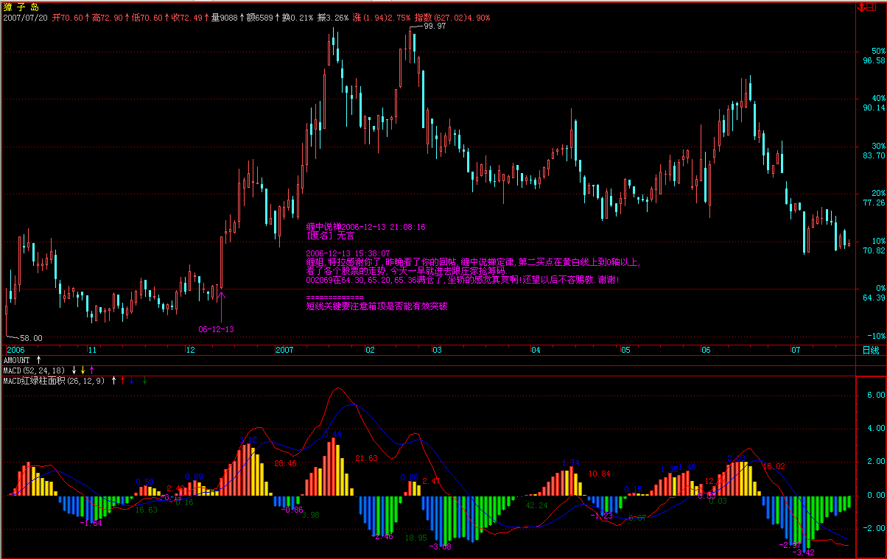
(2006-12-13 21:08:16)
------
[匿名] 想飞 2006-12-13 21:07:48
LZ,讲解580991时顺带讲讲怎么判断趋势的,最好从上市第一天一路讲下来
=============
先把如何判别MACD搞清楚。趋势、盘整的判别比这个简单，去好好消化本ID在没有趋势没有背驰给出的定义，自然就明白。
(2006-12-13 21:10:49)
------
wy1499 2006-12-13 15:41:40
楼主，沪市认沽权证的板块联动性很强，如990、991、992、993、994在12月6日下午2点半到7日上午10点同时背驰到第二类买点的低位，但具体哪一个拉伸幅度大和拉升时间的先后顺序就很难判断了，我在6日下午看上了993，本打算先在这一票上搞40%，再在后拉的其他票上再搞个20%，岂料7日中午拉了不到20%就早泻了，最后搞得找了个低位跑了，郁闷啊！
============
要找盘整图形结束的，没结束的只不过是箱型，对比一下038004的完美5波就知道了。993要盘整图形完美以后才可能大表现。
(2006-12-13 21:13:48)
------
所有关于991的问题明天再说，让各位有充分的时间思考。
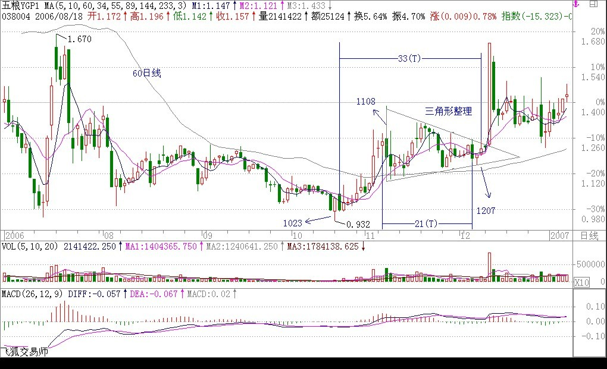
晚安，再见。
(2006-12-13 21:18:42)
|
|
|